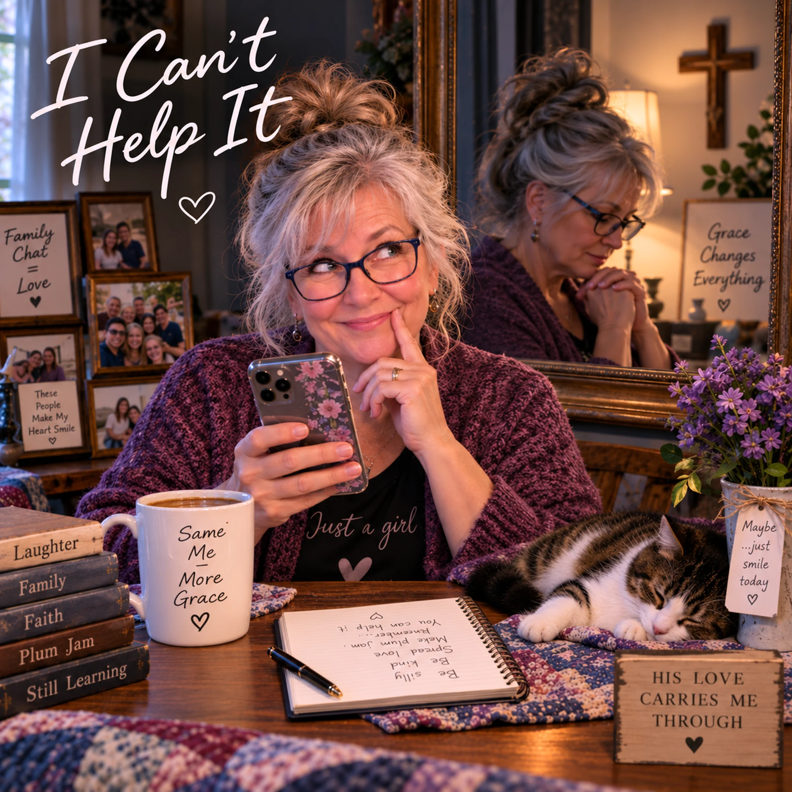
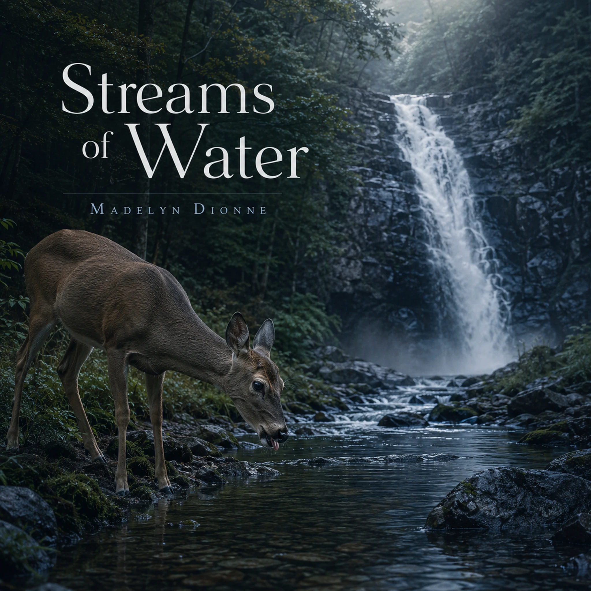

Before Tomorrow Shows Me Now
Devotional · Waiting, Presence & Trust

These songs begin with ordinary things—water, mirrors, seeds, roads, waiting, memory, work, questions—and follow them toward the spiritual truths they suggest.
Some songs are quiet. Some are playful. Some are deeply personal. Each one is paired with a devotional and Scripture references so you can listen, reflect, and then return to God’s Word for yourself.
You do not need to move through this site in any particular order. Choose what speaks to you. Stay with a song awhile. Read the devotional. Follow the Scripture. Come back later and hear it differently.
My hope is simply that something here helps you pause, think, grow, and draw a little closer to God.
NOTE: This site is growing. New songs and resources are added often, so there will always be something new to discover as we grow this resource. Don't be shy. Come back often. 🙂💜
Search by title, Scripture, or topic — or simply browse what's here.





Each song begins with the music and lyrics, followed by a devotional that explores the biblical principles reflected in the song. Take time to listen to the song, read the words, and consider the thoughts developed in the devotional.
After the devotional, you’ll find a Scripture Map with passages related to its themes. Please take time to read those Scriptures for yourself. The song and devotional are intended to encourage thought and reflection, but Scripture is the authority. Use the references to return to God’s Word, consider the passages in their context, and allow Scripture to deepen, confirm, or correct your understanding.
There is no required pace. You may listen first, read first, return to a song more than once, or spend additional time with a particular Scripture passage. This site is not meant simply to be read through—it is meant to encourage engagement with God’s Word.
I’m Madelyn Dionne. Madelyn is my pen name. My spiritual journey began when I received Jesus as a young child. Later, as an adult, I spent five years as a church secretary, along with many years as a wife, mother, and grandmother. Through several other jobs, countless hours crafting, and the experiences of ordinary life, all of those years have shaped the ideas I bring to my writing.
I am now retired. I write from the heart, seeking to speak plainly about faith in ordinary life. I believe God has called me to this work.
Besides the songs listed here, there are others housed on SoundCloud. I’m grateful for the listeners who have found my songs there, where they have now been played nearly 200,000 times.
I write the lyrics myself and use AI-assisted music tools to shape the recordings, choosing the voices, instruments, and arrangement until the song says what I mean.
It is my hope that this website will be a resource for growth, comfort, inspiration, a deeper understanding of God, and greater engagement with Scripture.
Questions, comments, or a request to use a song or devotional? Email MadelynDionneWrites@gmail.com or reach Madelyn through her SoundCloud profile.